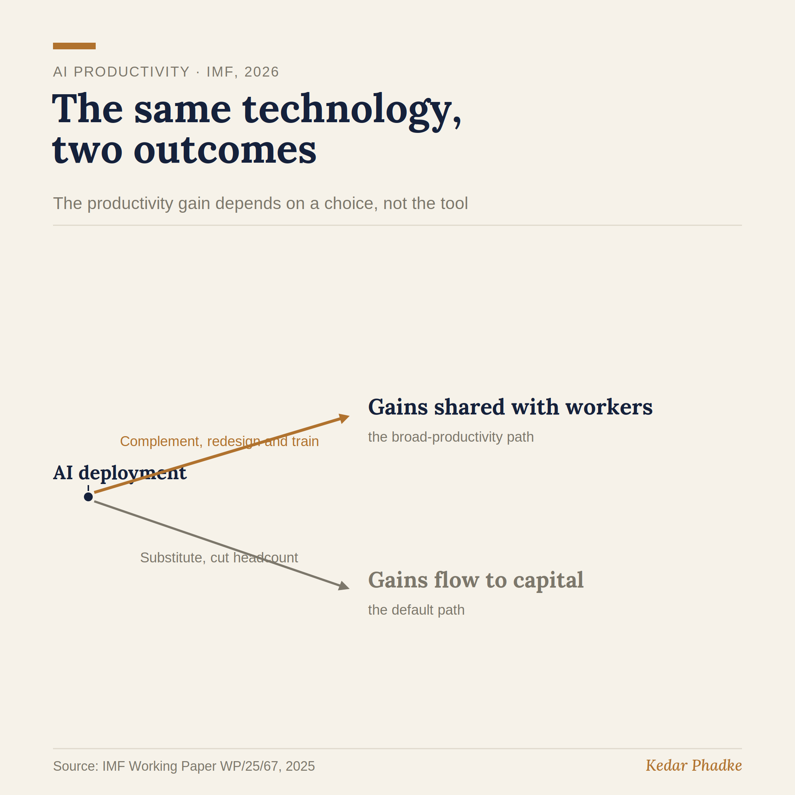

A 1% Forecast That Is Really a Choice
An IMF paper for European finance ministers, meeting in Dublin this month, estimates that AI could boost productivity across Europe by about 1 per cent cumulatively over five years. This headline received a great deal of attention. Most people viewed it as a prediction about technology, but it is really about choices that have not yet been made.
The Question Behind the Number
Labour economics has long pointed out that new technology can serve two roles. It can act as a complement, helping workers do more without replacing their judgement or skills. Or it can act as a substitute, taking over tasks and reducing the need for workers. While both can increase overall productivity, who benefits from those gains is very different.
The IMF makes this point clear. It states that simply being exposed to AI does not always mean job losses. Whether workers benefit or are replaced depends on whether AI is used to support them or to take over their work. The paper also finds that the gains from AI vary greatly between countries and are much larger in wealthier economies. Therefore, the 1 per cent figure is not really about the technology itself. It is an average that covers a wide range of possible outcomes, and where each economy ends up depends on choices being made today.
Who Captures the Gain Is Not Automatic
If a company uses AI mainly to cut jobs and save money, it is following the substitute path. If it uses AI to redesign workflows, create new roles, and train workers, it is on the complement path. Both types of companies will appear as adopting AI in surveys, but their results are very different. When you average these outcomes across many organisations, you get a figure like 1 per cent, which does not really tell you which path your own economy is taking.

This is something I would state more simply than the paper does. If companies simply follow their usual incentives, they tend to choose the substitute path, because it delivers quick results and does not require much change. The complement path takes patience and investment in people, which is more difficult when there is pressure to show results every quarter. Therefore, widely shared productivity gains do not happen automatically. They only occur if organisations and institutions make a conscious choice to go that way. That is why I believe the optimistic 1 per cent outcome is less likely, unless people decide to make it happen.
Widely shared gains are not the natural outcome that a choice can spoil. They are the exception that a choice has to create.
What This Means in Practice
For senior leaders, this changes how to think about investing in AI. The real question is not just how much to spend on AI systems, but how much of that spending goes towards people, such as redesigning roles, offering new training, and changing workflows. History shows this pattern with other major technologies, from electrification to computers. Productivity gains only emerged when companies reorganised around the new technology, not just when they purchased it.
If you are a student or just beginning your career, the real question is not whether your organisation uses AI, because they all will. The important point is whether AI is being used to support your work or to replace it. You can identify which path your organisation is taking if you pay attention.
This is especially important for economies like India, which rely on services and cost efficiency. The substitute path can quickly improve profit margins, so it is the most tempting and often the default choice. The complement path, helping people learn to direct AI rather than being replaced by it, is more difficult and takes longer to yield results. However, it is the choice that determines whether productivity gains benefit our workforce or leave them behind.
The IMF paper was written for policymakers, but its message applies to every hiring decision, deployment plan, and training budget organisations set this year. If you could see how much companies in your sector spend on AI systems compared to investing in people, what do you think you would find?
#AI #Economics #FutureOfWork #Productivity #LeadershipThe anchor is an IMF analytical paper, an intergovernmental source with no commercial stake in the conclusion, and the central figure is verified against the IMF's own published research.
Sources
- The 1 per cent estimate traces to IMF Working Paper WP/25/67, "Artificial Intelligence and Productivity in Europe" (Misch, Park, Pizzinelli, Sher), which states the medium-term gains are "likely to be modest, at around 1 per cent cumulatively over five years," that they "vary widely across scenarios and countries and are substantially larger in countries with higher incomes," and that regulation could reduce them by over 30 per cent. The IMF background note for the informal EU finance ministers' meeting in Dublin, 18 to 19 September 2026, restates this research and was reported by Reuters.
- On general-purpose technologies requiring organisational investment before productivity gains appear: Paul David, "The Dynamo and the Computer" (American Economic Review, 1990), and Erik Brynjolfsson and Lorin Hitt, "Beyond Computation" (Journal of Economic Perspectives, 2000).
A version of this essay was first shared on LinkedIn.